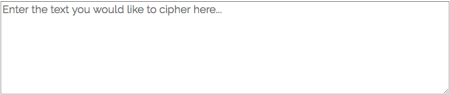
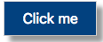

Design Decisions
This design page will walk you through the design standards that are in place within the website. It describes everything from the coding style to colors being used.
- Coding Style
- Layout
- Navigation
- User Inputs
- Typeography
- Colour
1. Coding Style
- Coded using Camel Case
section title="codingStyle"- Using tab spacing
- All styling should be done within the style.css sheet
- Using ID's and Classes where appropriate for styling
- Classes/ID's are descriptive and meaningful
2. Layout
The layout for the website has been kept simple in order to ensure that its easy to use and intuitive whilst also being in line with modern design principles and aesthetics.
- 3 main elements on every page of the website for the layout are:
- Header/Navigation
- Main Content
- Footer
- The header/navbar and footer have a width of 100% of the browsers tab/window
- The main content has a width of 75% and is centered
3. Header/Navigation
- Header and navbar has width of 100%
- Navbar is integrated in with the header
- When hovering over a menu item they will be underlined using the hover selector
-
nav li a:hover { background: none; border-bottom: 2px solid white; } - In order for the user to know where they are at any given time, the line remains under the menu option of the page they are on by adding a class within the html tag
-
a href="design.html" class="active" -
nav li a:hover { background: none; border-bottom: 2px solid white; } -
.active { background: none; border-bottom: 2px solid white; }
4. User Inputs
The user inputs will display textareas and buttons
- All textarea's are to be of the following design with placeholders
 - All buttons on the cipher pages should be of the following design

Textarea style:
textarea {
width: 75%;
height: 150px;
margin-left: auto;
margin-right: auto;
display: block;
font-size: 18px;
}
The button within the cipher pages are named accordingly within a class of cipherBtn.
The button has shadow to add texture and also has a hover and active selector styled.
.cipherBtn {
display: block;
margin-right: auto;
margin-left: auto;
font-size: 16px;
text-align: center;
color: #fff;
background-color: #0C457D;
padding: 10px 20px;
box-shadow: 7px 7px 7px #999;
}
.cipherBtn:hover {
background-color: #123770;
}
.cipherBtn:active {
background-color: #123770;
box-shadow: 3px 3px 3px #999;
transform: translateY(4px);
}
5. Typography
For the font used on the website, it was taken from Google Fonts and is called 'Raleway' which can be found here and was made by Matt McInerney, Pablo Impallari and Rodrigo Fuenzalida.
The various font weights can be found below, which will display the 4 different weights that are available to be used.
A B C D E F G H I J K L M N O P Q R S T U V W X Y Z
Other elements of the typography such as headers can be found below alongside their styling.
The standard default body styling is below:
body {
margin: 0;
font-family: 'monsterrat', sans-serif;
font-weight: 400;
background-color: #eee;
font-size: 16px;
}
Headers
The headers are used for titles and subtitles within the website and are styled as follows;
h1
Header 1 (h1) has a font size of 2em which is about 24pt or 32px
h2
Header 2 (h2) has a font size of 1.5em which is about 18pt or 24px
h3
Header 3 (h3) has a font size of 1.25em which is about 14.5pt or 20px
6. Color Themes
- The colour for the background within the header/footer is hex #5f4c4c
- The colour for the text within the header/footer is hex #ffffff
- The colour for the text within the headers and main contents is 'black' as default
- The colour for the line separating the contents between headers in design.html is ##999999
- The colour for the cipher buttons background is hex #03457D
- The colour for the cipher buttons hover/active is hex #123770